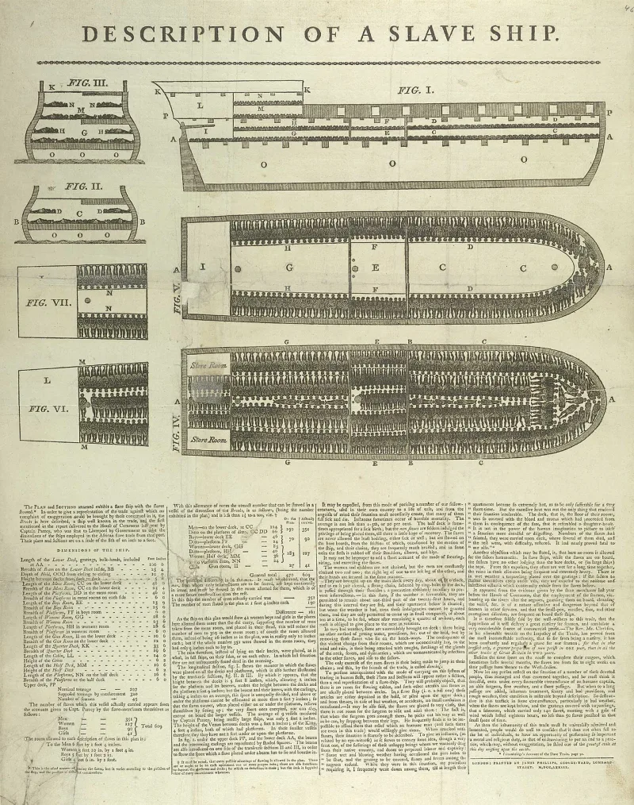
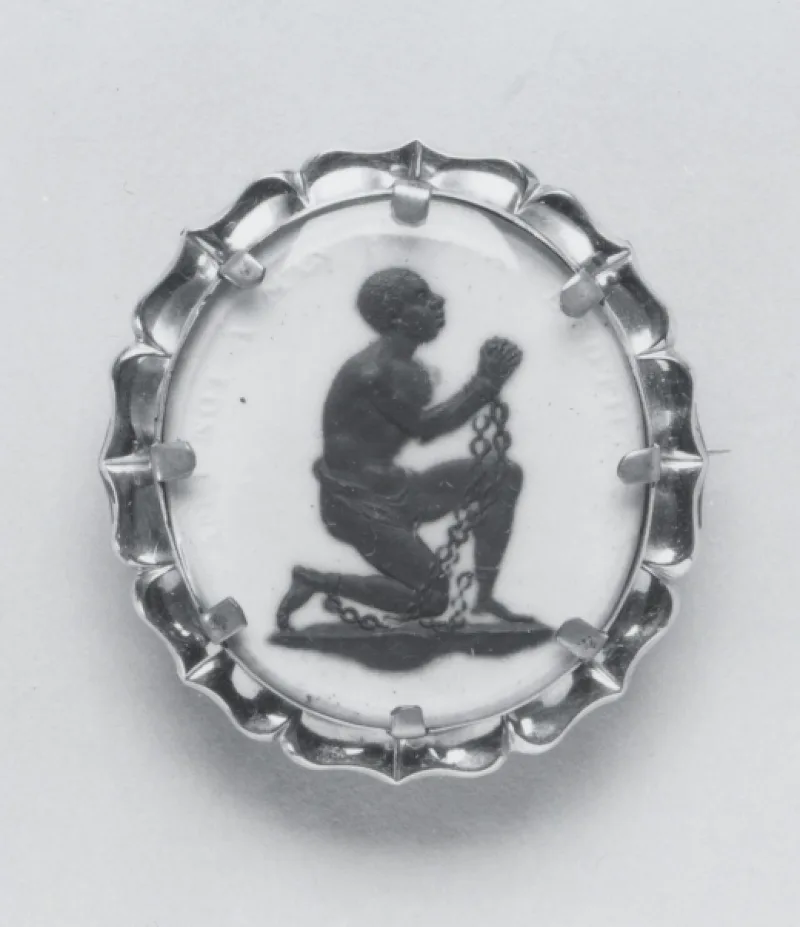
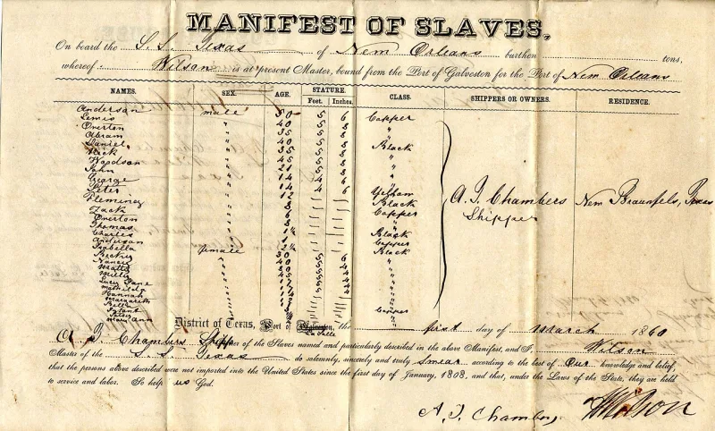

The text settles it — but concede the grievance first, or nothing will be heard.
This is the verse the whole movement rests on. Deuteronomy 28:68 — "And the LORD shall bring thee into Egypt again with ships… and there ye shall be sold unto your enemies for bondmen and bondwomen, and no man shall buy you." Ships.
Sold as slaves. A market so flooded that nobody would buy.
Read on its own, it sounds like the Atlantic slave trade.
Because no other people were carried across an ocean in ships to be sold. Israel walked to Babylon.
The specifics really do fit — and that is not a small thing to notice.
Read it from verse 1. Moses is speaking to covenant Israel at Moab, before they enter the land.
He lists the blessings for obedience, then the disasters for disobedience. "Egypt" means Egypt everywhere else in Deuteronomy.
And the same covenant that pronounces the curses also promises the return, in Deuteronomy 30:1-5.
This one has a clear answer from the text. The text settles it — but only if you read the whole chapter, and only after you have taken the history seriously.
You are not arguing that the suffering was not real. You are showing that the chapter which describes it also promises the end of it.
That is a better thing to offer than a rebuttal.
"Read me verse 1. Who is Moses speaking to?
Then read me chapter 30."



No other people was shipped across an ocean, sold, and left with no buyer.
Their teachers press the specificity. No other people was carried across an ocean in ships to a land of bondage, and sold there. And no other market broke down under the glut: 'no man shall buy you.' Israel went to Babylon overland. Only the Atlantic trade matches ships, plus selling, plus buyers who ran out.
Verse 68 also does not stand alone. They read the whole chapter as an itemised description of the African-American experience. An iron yoke on the neck (verse 48). Servitude to a nation of fierce countenance whose tongue you do not understand (verses 49-50). Sons and daughters given to another people (verse 32). No ease among those nations, nor rest for the sole of your foot (verse 65). A byword and a proverb among all peoples (verse 37).
If God said the curses would identify His people, and only one people wears the whole garment, then that people is Israel.
Concede the history first. Then read the whole chapter, and it settles the question.
Concede the history first. American churches were largely silent about slavery, and many of them blessed it. The echo between Deuteronomy 28 and the Middle Passage is genuinely arresting. Christians who wave it away are not listening.
Then take the reading on its three points. The text names its addressee, covenant Israel at Moab. Egypt is literal all through Deuteronomy. And the same covenant supplies return provisions that Scripture reports as fulfilled. Josephus records a documented shipping of Jewish captives to Egypt that fits the verse without strain.
The deeper problem is what the reading leaves out. Galatians 3:13 says Christ was made a curse for us, redeeming us from the curse of the law. A movement built on proving it is under the curse has organised itself around the one thing the gospel says is already absorbed.